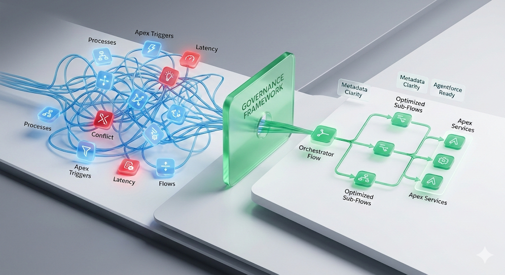

Salesforce has done an incredible job empowering teams with low-code tools. But in the enterprise, "low-code" does not mean "low-risk." In my years of solving large-scale problems end-to-end, I have found that the easiest way to build is often the most expensive way to maintain.
I recently analyzed a mature Salesforce org where a single Account record update triggered a cascade of seven different Flows, two Apex Triggers, and three legacy Workflow Rules. This isn't just inefficient; it's dangerous. These processes all compete for the same governor limits, causing save times to balloon. The business thought they had a "Salesforce performance problem"; what they actually had was a structural orchestration problem. When everyone can build, eventually, no one can deploy.
The Architecture of Chaos
True architecture isn't about enabling speed today; it's about defining the guardrails for scalability tomorrow. When a Salesforce org lacks a clear execution strategy, you are essentially building a black box. This manifests in two major ways:
The Silent Performance Tax: Every unoptimized Flow loop or redundant SOQL query adds critical milliseconds to your save time. To a business user, it's just a "slow page." To an architect, it's a warning sign of fragmented metadata and a technical debt tidal wave waiting to break.
The AI Readiness Trap: As we move aggressively into the era of Agentforce and Data Cloud in 2026, a messy metadata layer is a fatal blocker. If your internal logic is fragmented and undocumented, you cannot expect an AI to make sound decisions on top of that foundation. You cannot automate a process that your own architects can't map out on a whiteboard.

Moving Toward Clarity
Breaking the cycle of technical debt requires a shift from "feature delivery" to platform engineering. Here is how mature organizations approach the Complexity Wall:
Consolidate and Simplify: Move away from "one flow per requirement" toward a modular, sub-flow architecture that is easier to debug, test, and release.
Rationalize the Triggers: Implement a strict Trigger Framework to ensure a single, predictable execution order for your Apex and declarative logic.
Governance as a Service: Stop treating your platform team like a simple service desk for change requests. Treat Salesforce as a core product, and implement governance that mandates architectural review before a single component is built.
The goal of high-end Salesforce engineering isn't just to make the system work today. The goal is to ensure your most critical business platform remains your greatest asset, rather than becoming your biggest liability.